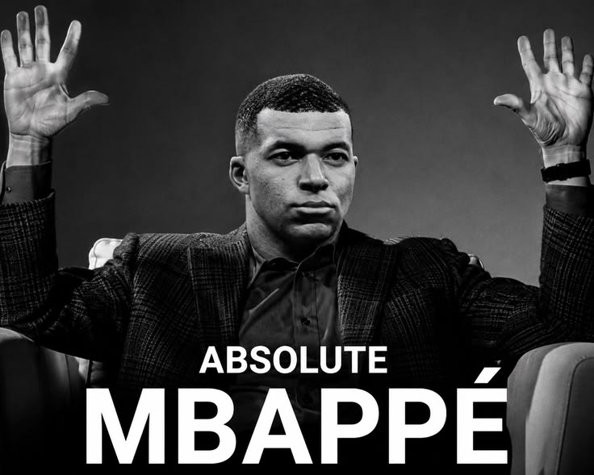

французский футболист, нападающий клуба «Реал Мадрид» и капитан сборной Франции. Считается одним из лучших игроков мира. Чемпион мира и лучший молодой игрок чемпионата мира 2018 года. Лучший бомбардир в истории сборной Франции (66 голов). Первый игрок, сумевший дважды стать лучшим бомбардиром чемпионата мира (в 2022 и 2026 годах) и рекордсмен по общему количеству голов, забитых на чемпионатах мира (22 гола)

Интересные факты
- Знак зодиака: Стрелец (он родился 20 декабря 1998 года)
- Поездка к Зидану в детстве: В возрасте 13–14 лет Мбаппе приглашали на просмотр в мадридский «Реал», где он лично познакомился с Зинедином Зиданом.
- Феноменальная скорость: Пиковая скорость Мбаппе достигала 36,2 км/ч, что делает его одним из самых быстрых игроков планеты.
- Благотворительный жест: Все свои призовые деньги за выступление на победном чемпионате мира 2018 года (более 400 000 евро) Мбаппе передал детской благотворительной организации.
Клубы
| Годы | Команда | Голы |
|---|---|---|
| 2015-2018 | «Монако» | 27 |
| 2018-2024 | «Пари Сен-Жермен» (ПСЖ) | 256 |
| 2024 – наст. время | «Реал Мадрид» | 70 |